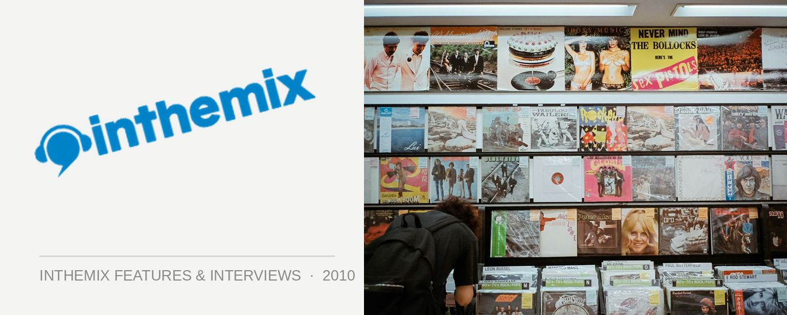

Editorial: Signing off!
One more round of festival hysteria, and then I’m done. This week the lineup for the debut of Creamfields was announced, and it’s delivered some impressive names. Not that we’re exactly starved for excitement at the moment – the Good Vibrations Festival kicks off this weekend, and we’re not far off from Future Music Festival, which sports possibly the most insane dance lineup I’ve ever seen in Australia. Drool.
For me, the Creamfields announcement marks the end of what’s been an exhilarating three years working at ITM. Festival announcements, tour rumours, industry controversies, quirky occurrences to squeeze a few laughs out of (remember the wannabe Tasmanian drug dealer who epic failed with a shipment of blue M&Ms?) There hasn’t been a moment of boredom! I’ve had the opportunity to interview hundreds of artists – with Paul van Dyk, Eric Prydz, Armin van Buuren, Underworld and Stanton Warriors proving some of the most memorable (not to mention a showdown with Muscles). Covering Trance Energy in Holland also sticks out, as it’s pretty much my personal pinnacle of global dance events. It’s been a pleasure and a privilege!
Better than all of this though was being in the thick of the consistent inspiration that is electronic music. An art form essentially driven by technology, it’s forever pushing forward and there’s countless talented musicians working hard around the world to ensure it continues to do so. Electronic music has come a ridiculously long way since I first began listening fifteen years ago, and it boggles the mind to think of what we’ll be listening to fifteen years from now!
It’s tough to let go though… My first review on ITM was published back in 2001, and I’m looking forward to hanging around as a contributor for years to come (and Tiesto might have even twittered my review last week, woooooo…). Signing off!
Angus Paterson
Editor
inthemix.com.au